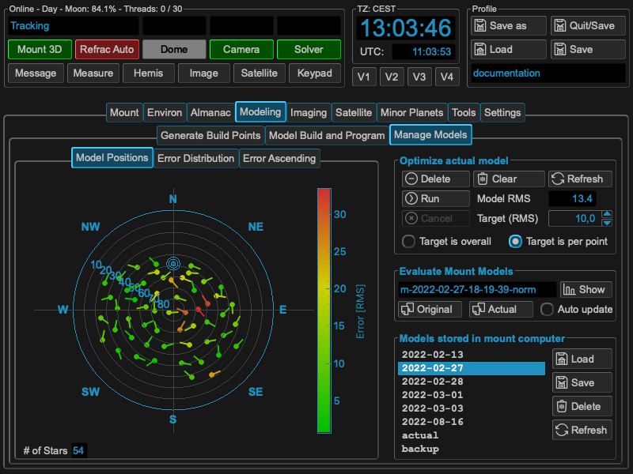

Modeling¶
I only focus on model building with tool support, so no words about manual model building. I don’t know the internal algorithms of the 10micron mount how the calculate their corrections. So many of the hints derive from pure logical or mathematical approaches and even there I personally might have some misconceptions or make some errors.
So my goal in model building is quite simple: I’m lazy in doing setups, so I want a solutions which gives me a correction model most accurate in minimum of time automatically. I rely heavily on the corrections capability on the 10micron mounts, so I use them always with dual tracking on. For doing a setup there are many things to think of beside the model (leveling, rigidity etc.). Keep them perfect, but I don’t talk about them. So this results in two tasks I have to do to get a model to do unguided images: Polar alignment and the model for correction itself. I refer to the Blog Filippo Riccio from 10micron:
https://www.10micron.eu/forum/viewtopic.php?f=16&t=846
All the hints you get from the mount (how to turn knobs, alignment star) improve the alignment. As the model is only an approximation for the error correction, it will be not an one step approach. If you aim for the best result, please think of 2-3 iterations of the whole procedure. In my setup I normally need 2 iterations for doing an alignment which is good for 20-30 min exposures and have round stars.
As Overview: MountWizzard4 has a straight forward approach for building models. The following chart shows each basic step.

The following sections describe each step in detail:
Step 1: Polar alignment¶
All credits for explaining the following section go to 10micron and many experts using the mount.
Initial alignment¶
Initial three star alignment insufficient to get a good polar alignment error (PAE) value. A two star alignment can only give a poor PAE estimate as the cone error correction is missing, can be many arc minutes off true value Minimum that can be used is 3 stars but they recommend at least 5 and ideally 10 points (ideally based on experiments say that 12 to 20 points have better convergence without spending too much effort).
Note
20 points in MountWizzard4 using the fast ASTAP plate solver will do 20 points in around 7 minutes - not too onerous for a good PAE measurement.
Pay attention also that the stars are not near to the same maximum circle (i.e. not all near the same right ascension, or all near the same azimuth, etc.). When using few stars, how the stars are chosen is critical.
Note
MountWizzard4 helps here by automating the spread of points to avoid the problems listed through its various point layout patterns.

The hemisphere window is showing different colors and sizes for selecting the right stars once the Polar/Ortho mode is selected. You need a valid first model in the mount to use this feature!
As you add stars, more and more model terms will be added um of either (# points - 1) or 11 terms for a single all sky model - 11 terms meaning all required terms have a solution. Note that this may be split into two models for east side and west side in which case the number of terms shown by the mount is doubled.
A polar alignment error less than maybe one arcminute will be possible. If you are using Dual Axis Tracking it sorts all this out for you. (A 10 minute exposure with a 10 arc minute (1/6 degree) PAE will not show field rotation on a large full frame sensor up to latitude 60 north or south)
How polar align works¶
The polar align function works in a really easy way. It removes the polar axis error from the model before pointing at the star, so when you center the star with the azimuth/altitude movements the right ascension axis will be automatically aligned with the celestial pole.
Choosing location in the sky of the star to use to do the polar alignment correction is critical. The choice of the star is made so you avoid the zones where the manual movements have no effect. Avoid the zenith (this is where the azimuth knob has no effect). Avoid the East-West axis (this is where the altitude adjustment knob has no effect)
Note
MountWizzard4 will help you selecting the right location by marking the right regions and tight stars. In addition you don’t need to use the handpad for selecting the stars: in MountWizzard4 you could select the reference star with a mouse click and start the polar alignment.
In MountWizzard4 the polar alignment works by changing the mode to polar/ortho alignment. In this mode, you could select a star in the hemisphere window with a mouse click and start slew the mount to the reference star. All you need is to center the selected reference star in you image.
Note
For centering a star you could use the image window, select for continuous exposure and enable the crosshair. You could also magnify the region around the crosshair center to improve the precision.
Should I deactivate the dual axis tracking?¶
If you have the dual axis tracking active, the mount will track using the model built in the initial phase (the initial 3 points generates a minimum model with 2 terms - its not a good model).
You will not be getting the correct tracking rate while you adjust the alt/az knobs. So if you wait too much before centering the star and giving confirmation to the mount controller, or if the initial error is very large, there will be a drift. Therefore you must turn off dual tracking while performing the PA procedure.

Effects of polar misalignment¶
Even if your mount is wildly away from a correct polar alignment, when you make a model the correction of the polar misalignment will be performed exactly when Dual Axis Tracking is activated. This means that the pointing error and the tracking error will be the same - if you make a model with the same number of stars and the same accuracy - whether the mount is aligned with the celestial pole or not. When dual axis tracking is deactivated, the mount will track like a normal equatorial mount, by moving the right ascension axis at a constant sidereal speed.
The only important thing that will change with increasing PAE is the field rotation.
Step 2: Selecting build points¶
The first step for building a model is the selection of the desired model points. Handling you horizon is an important step as MountWizzard4 helps you could in finding points, which were not covered through obstacles in your location defined by the horizon line.

There were multiple ways of setting your model points within MountWizzard4:
|
There are multiple parameters or selections available to refine your point selection. the best way to find out is simplest to test them.
Note
Please think that you distribute the model points at the end over a sphere! Using alt/az is convenient, but might be misleading. You could enable the polar view in hemisphere window to get an image how the points are spread in a polar diagram.
It makes a lot of sense if you have discovered you favourite model points setup to store them in a file and reload them whenever you want. You could store as many files as you want.
Sorting build points¶
MountWizzard4 does a default sorting for you. If the default does not fit to your setup, you could tweak the order and additional constraints like you want. These settings are stored persistent in your profile.
|
Warning
Regardless what you select, the 10micron mount computer could only handle a maximum of 100 points
If you are using a dome, you could select the option to sort the points to optimize the slewing of the dome. This will happen the following way:
MountWizzard4 simulates a full model run, calculates the mount positions, calcs from mount the resulting dome azimuth with all geometry corrections and sorts afterwards the build points that you get ascending azimuth for the dome.
Build points specials¶
In addition you could also mix different types of model point generation by checking
keep points from existing generation
MountWizzard4 will not cleanup the point map before adding new point, but add them.
Step 3: Running the model build¶
After you have selected you build points, MountWizzard4 could automatically run through the points and generate the data to generate a model. These are steps you could basically all manual as the final model calculation itself is done in the mount computer! There are two different ways offered from 10micron to build a model:
|
In incremental model build, each new point will start a recalculation of the model in the mount. This behavior is also called sync refine, as with each point the model is processed.
In batch model build, a complete set of point and their data are transferred to the mount computer, which calculates from this data a new model.
In result both variant will produce the same model with the same quality. The difference is the way and the context you are working in. MountWizzard4 uses the batch model build as there are advantages (not in the model quality) in the automatic handling of point data.

In the “model build and program” tab, that actual model spec from the mount computer is shown. If you are in an early stage of your setup, you might use some of the hints given to refine and tune your mechanical setup before building your final model for imaging.
Note
All values which are show in these graphs were calculated by the mount computer itself and just read out and displayed by MountWizzard4. As the 10micron algorithm of the model optimizer is not know. The given hints are observations.
Warning
Any changes in your mechanical setup invalidates the model!
Explanation model build process:¶
The model correct for error. Some could be removed exactly, some not. The way is a mathematically optimization method. In max the mount could calculate 22 terms (which means two models of a set of 11 terms, one for WEST and one for EAST side). If you need 22 parameters for the model (for whatever reason the mount thinks), you have to have at minimum 22 alignment stars or more. Otherwise this will not result in 22 parameters. Again like in polar alignment: think of what is the goal of this task. For sure you would like to remove as much of the alignment error to be able to get unguided images.
Modeling automatics¶
The automation process is explained by the next drawing. It is quite simple, but there are some important topic, which you should care about.

MountWizzard4 tries to do as much steps at the same time as possible to reach the minimum model build time. So “Take an image” means that the signal to do the next slew to the point is already started when the camera sends image integration finished. During image download and image saving, slewing is already on the way. The same happens to image solve. MountWizzard4 does not wait until an image is plate solved, but manages as much images in the shortest time. If your plate solver is fast, your don’t see much of this asynchronous behavior, if you use a slower one or if you are running MountWizzard4 on a slower machine, you might experience a stack of plate solving tasks when the mount slewing and imaging is already finished.
Note
For the plate solver a starting Ra/Dec and scale hint is necessary for a successful plate solve. Please check your environment if INDI or INDIGO embeds this data in the FITS header of the image file.
You could “Pause” the model build at any time, but MountWizzard4 will finish after a sequence which allows safely to pause. It will not happen immediately.
You also could “End” the model build process at any time. In this case MountWizzard4 will take all already existing data and tries to program a model to the mount.
In addition you could “Cancel” a model build run. In this case all data is lost.
MountWizzard4 offers a disabling of dual tracking during the model build run and restores this state afterwards or a mount park after a model build is finished.
During a model build it might happen due to clouds or other events, that some of the images from model point could not be solved an therefore used for model build. For this situation you could enable a retry mechanism for the “missed” points. After running through all points, MountWizzard4 will retry the missed ones N times and will add their data if possible afterwards.
Using model datafiles¶
MountWizzard4 stores for each model build run all data (and some more for analyse) to build a mount model. With this data you could rebuild at any time you mount model from scratch if you for example deleted to much points during optimisation or other reasons.
In addition you have the chance to combine multiple model runs to a single mount model! Please think of the maximum of 100 point the mount computer will handle to calculate a mount model.
The warning about the invalidation of the model when mechanical changes are made are true for this step as well. Combining model data from different mechanical setups lead into an invalid model. Rebuilding a model from old data when mechanical changes were made result also in an incorrect model.
Fast Align¶
There is a way to adjust an existing model to a certain sphere position. If you choose fast align, MountWizzard4 will do for the actual position an image, plate solve it an align the model to the solved coordinates. This means the whole model is move in a way, that the actual pointing coordinates and solved coordinates are equal. But this changes model pointing for all other position in the sky as well without knowing if this shift really fits there.
Note
Fast align is a step to adjust quickly a reasonable model to an actual pointing position. This action is not a model build process! You most probably loose the pointing accuracy of you model!
Step 4: Managing mount models¶
Managing your models is a central task especially if you image in a mobile environment. MountWizzard4 supports this in the Manage Model Tab in the main window. All functions there are related to the actual mount model or the models stored in the mount.
Three graphs are available for checking the model:
|
Note
All values which are show in these graphs were calculated by the mount computer itself and just read out and displayed by MountWizzard4. As the 10micron algorithm of the model optimizer is not know. The given hints are observations.
The Model Positions graph shows in a polar plot how the model point were distributed over the hemisphere and how large the errors of each point is in a color scheme. If necessary you could check “Show error values” and numerical values will label each point.
{kind=link}
In the give example you see the western point are in general better than the eastern ones, so in the setup there might be differences in setup depending on the pier side.
The Error Ascending graph show all model points sorted by ascending error values. You might see some outside points which differ a lot from other ones or recognize an elbow type of curve which also might lead to some issues with you setup.
{kind=link}
The Error Distribution graph shows in a polar plot how the error values (higher values on outer rings) and the polar angle of the error value.
{kind=link}
In all graphs you will see the pink lines which show the value of the Target (RMS) setting in the “Optimize actual model” box. This helps in adjusting a cut-off value for automatic model point removal.
Optimizing the model¶
I some cases you will discover that some model points and their errors are outside a reasonable area. In that case three different model optimization scenarios come into place. The first and the obvious one is to remove manually the worst point of the model (1).

If you have more than a single point to remove, the second and third come into place, an automation process within MountWizzard4. With setting the checkbox “Optimize overall Target RMS” (3) and starting the optimization run (6), MountWizzard4 will delete as many point until the Model RMS (2) is below the selected threshold (5).
{kind=link}
Checking “Delete point above Target RMS” (4) and run (6) the optimization, MountWizzard4 will delete all points where their individual Error is above the selected threshold (5). Please note that this will lead to a different Model RMS (2).
Explanation of optimization of process:¶
Yes you could remove bad points from the model. But does it help ? Again from mathematics: you bend an error curve like a metal plate over a rough surface to equalize it. If the is a single stone under this plate -> approximation might be bad. So removing this stone might help in getting a better approximation for the rest of the surface. But it is not good to remove the gravel under the plate to improve just numbers in RMS! If I see large outliers in alignment errors within an area which shows good numbers around, I remove that single point. But not to much. In average I remove 2-5 points from a 60 point model max. Yes if you remove a point the over RMS could rise ! That’s because the whole model is newly calculated and that’s no subtraction of a bad point.